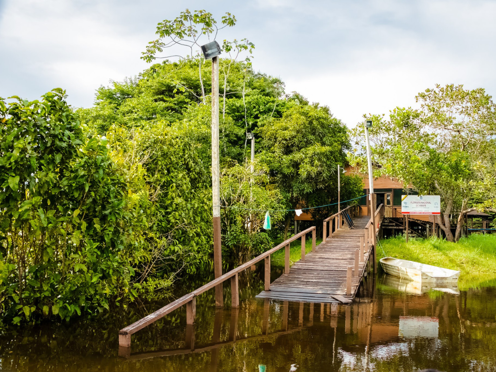

O Amapá é um estado localizado na região Norte do Brasil, conhecido por sua rica biodiversidade e grande preservação ambiental. Grande parte de seu território é coberta pela Floresta Amazônica, abrigando rios, reservas naturais e uma enorme variedade de espécies animais e vegetais. Sua capital é Macapá, cidade famosa por ser cortada pela Linha do Equador, onde está o monumento do Marco Zero do Equador. A economia do estado se destaca pela extração mineral, comércio e atividades ligadas ao turismo ecológico. Além das belezas naturais, o Amapá possui forte influência cultural indígena, africana e ribeirinha, refletida na música, culinária e festas tradicionais da região.
